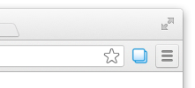
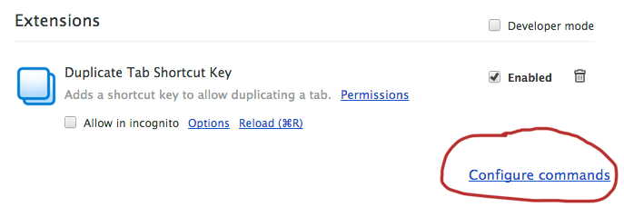
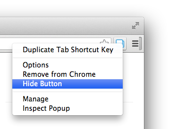
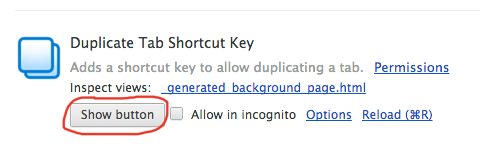
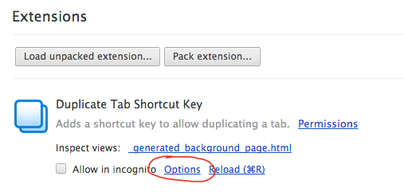
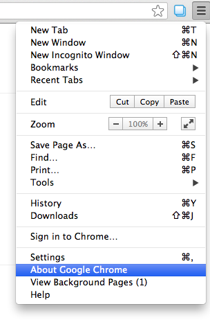

 For ease of use, this extension adds a button to Google Chrome by default. Clicking it will open this options page.
You can set the button behavior to instead duplicate the current tab, if you prefer. See the notes below for information about how to hide the button and how to get back to this options page.
To change the shortcut key for duplicating tabs, visit the Extensions Page and at the very bottom right corner you will see a link that is either called Configure commands or in newer versions of Google Chrome just Keyboard Shortcuts.

 To hide the Duplicate Tab button, right click it and chose "Hide."
 To restore the Duplicate Tab button, visit the extensions page (as described below) and click on "Show Button."
To access this extension's options page without the toolbar button:
Step 1: Select the Settings Icon, then choose Tools and then Extensions:
Step 2: Click on the options page link:
You must have Google Chrome verison 25 or higher to use this extension. Please update your browser if you are experiencing issues.